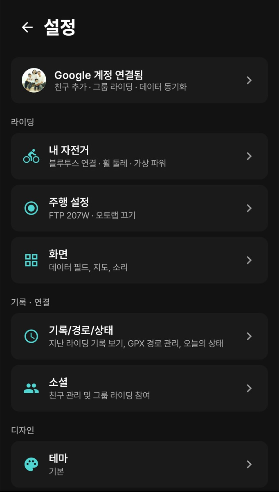
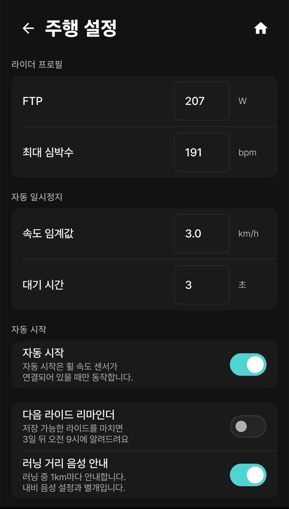
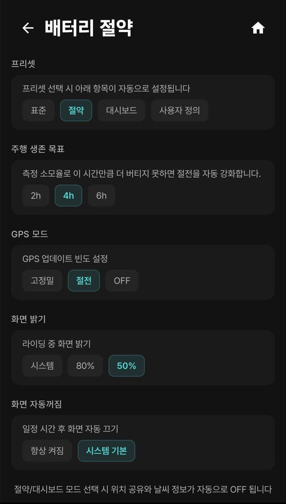
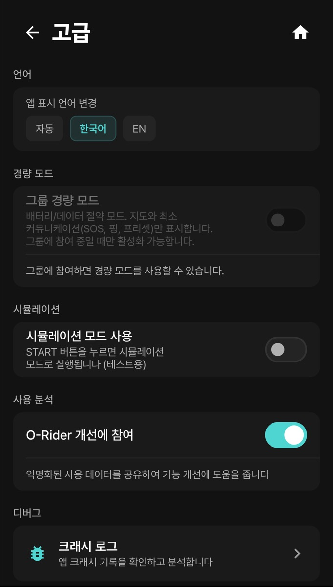

설정은 더보기 > 설정에서 엽니다. 라이딩·러닝 준비 화면 오른쪽 위 톱니(라이딩 설정 / 러닝 설정)를 눌러도 열립니다.

아래 표는 Android 기준입니다. iPhone에서 위치가 다른 메뉴는 0장 대응표를 보세요.
| 구역 | 메뉴 | 들어 있는 것 | 설명 |
|---|---|---|---|
| 라이딩 | 내 자전거 | 센서 연결, 휠 둘레, 가상 파워 | 3장 |
| 주행 설정 | 라이더 프로필(FTP·최대 심박수), 자동 일시정지, 자동 시작, 리마인더, 러닝 거리 음성 안내, 자동 랩, 라이드 워크아웃, 임계치 알림 | 2장 · 8장 | |
| 화면 | 주행 · 데이터 필드 · 네비게이션(지도 포함) · 사운드 | 4장 | |
| 기록 · 연결 | 기록/경로/상태 | 주행 기록 · 경로 관리 · 상태(PMC, AI 코치) | 5장 |
| 소셜 | 알림, 활동 피드, 친구 관리, 라이딩 그룹, 실시간 위치 공유, 심박 공유 | 7장 | |
| Android 디자인 | 테마 | 기본 / 고대비 (야외). iPhone에는 테마 설정이 없습니다. | 4장 |
| 계정 · 시스템 | 계정 | 로그인, 위치 공유 대상, 활동 기본 공개범위, 닉네임·친구 코드, Strava, 삼성 헬스, 웹 대시보드 | 아래 · 9장 |
| 시스템 | 데이터 절약 · 배터리 절약 · 고급 · 앱 정보 | 아래 | |
| O-Rider | 버전, 이용약관, 개인정보처리방침, 라이선스 | — |

| 항목 | 설명 |
|---|---|
| 계정 카드 | 이름, 이메일, 로그아웃 |
| 위치 공유 | (iOS 설정 > 소셜) 내 위치를 보일 대상(전체공개 / 친구만 / 비공개). 공유 켜기는 설정 > 소셜 > 실시간 위치 공유에서 따로 합니다(7장). 공개 범위 이름 대응은 7장 대응표. |
| 활동 기본 공개범위 | (iOS 설정 > 소셜) 새 기록을 올릴 때의 기본값. 활동별로 바꿀 수 있습니다. |
| 닉네임 · 친구 코드 | 친구에게 보이는 이름과 내 6자리 친구 코드 |
| STRAVA · 삼성 헬스 · 웹 대시보드 | 9장. iOS Strava는 설정 > 연결, Apple 건강은 설정 > 기록 · 연결 > 헬스 연동에 있습니다. |
계정 삭제 요청과 전체 데이터 내려받기는 앱이 아니라 웹(orider.co.kr)에서 합니다.
iOS iPhone은 설정 > 시스템 > 전력 관리에서 데이터 절약을 정하고, 선택지 이름은 오프라인 · 모두 허용 · Wi-Fi만입니다(0장 대응표). 아래 표는 Android 기준입니다.
Android 항목마다 오프라인 · 셀룰러+WiFi · WiFi만 중 하나를 고릅니다. 화면 맨 위에 현재 네트워크(예: WiFi)가 표시됩니다.
| 항목 | 쓰는 곳 | 오프라인으로 두면 |
|---|---|---|
| 지도 타일 | 지도 이미지 다운로드 | 이미 받아 둔 지도만 보입니다. |
| 날씨 정보 | 실시간 날씨 업데이트 | 날씨가 갱신되지 않습니다. |
| 위치 공유 | 친구/그룹 실시간 위치 | 친구·그룹이 내 위치를 받지 못합니다. |
| Strava 업로드 | 라이딩 기록 업로드 | Strava에 올라가지 않습니다. |
iOS iPhone은 설정 > 시스템 > 배터리 설정입니다. 프리셋(표준 · 절약 · 대시보드 · 사용자 정의), GPS 모드(고정밀 · 균형 · GPS 끔), 화면 밝기가 있고, “화면 자동꺼짐” 대신 설정 > 화면 > 디스플레이 > 화면 켜짐 유지를 씁니다. 아래 그림과 표는 Android 기준입니다.

| 항목 | 선택 | 설명 |
|---|---|---|
| 프리셋 | 표준 · 절약 · 대시보드 · 사용자 정의 | 절약·대시보드를 고르면 위치 공유와 날씨 정보가 자동으로 꺼집니다. 항목을 직접 바꾸면 사용자 정의가 됩니다. |
| 주행 생존 목표 | 2h · 4h · 6h | 측정한 배터리 소모율로 이 시간만큼 버티지 못하면 절전을 자동으로 강화합니다. |
| GPS 모드 | 고정밀 · 절전 · OFF | OFF는 GPS를 끕니다. 지도·경로가 기록되지 않으니 실내 트레이너에서만 쓰세요. |
| 화면 밝기 | 시스템 · 80% · 50% | 라이딩 중 화면 밝기 |
| 화면 자동꺼짐 | 항상 켜짐 · 시스템 기본 | 거치대에 두면 항상 켜짐, 주머니에 넣으면 시스템 기본이 알맞습니다. |

| 항목 | 설명 |
|---|---|
| 언어 | 자동(휴대폰 언어) · 한국어 · EN |
| 그룹 경량 모드 | 그룹 참여 중에만 켤 수 있습니다(7장). |
| 시뮬레이션 모드 사용 | 켜고 START를 누르면 가상 데이터로 실행됩니다(테스트용). 실제 기록과 섞이지 않게 쓴 뒤 꺼 두세요. |
| O-Rider 개선에 참여 | 익명화된 사용 데이터를 공유합니다. |
| 크래시 로그 | 앱 오류 기록을 보고 개발팀에 전달할 때 씁니다. |